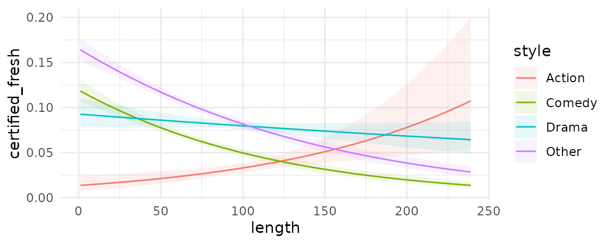
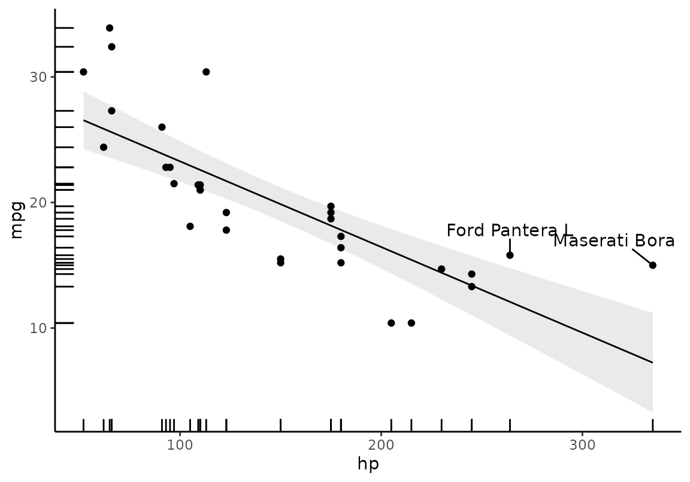

In the context of this package, an “Adjusted Prediction” is defined as:
The outcome predicted by a fitted model on a specified scale for a given combination of values of the predictor variables, such as their observed values, their means, or factor levels (a.k.a. “reference grid”).
Here, the word “Adjusted” simply means “model-derived” or “model-based.”
Prediction type (or scale)
Using the type argument of the
predictions() function we can specify the “scale” on which
to make predictions. This refers to either the scale used to estimate
the model (i.e., link scale) or to a more interpretable scale (e.g.,
response scale). For example, when fitting a linear regression model
using the lm() function, the link scale and the response
scale are identical. An “Adjusted Prediction” computed on either scale
will be expressed as the mean value of the response variable at the
given values of the predictor variables.
On the other hand, when fitting a binary logistic regression model
using the glm() function (which uses a binomial family and
a logit link ), the link scale and the response scale will be different:
an “Adjusted Prediction” computed on the link scale will be expressed as
a log odds of a “successful” response at the given values of the
predictor variables, whereas an “Adjusted Prediction” computed on the
response scale will be expressed as a probability that the response
variable equals 1.
The default value of the type argument for most models
is “response”, which means that the predictions() function
will compute predicted probabilities (binomial family), Poisson means
(poisson family), etc.
Prediction grid
To compute adjusted predictions we must first specify the values of
the predictors to consider: a “reference grid.” For example, if our
model is a linear model fitted with the lm() function which relates the
response variable Happiness with the predictor variables Age, Gender and
Income, the reference grid could be a data.frame with
values for Age, Gender and Income: Age = 40, Gender = Male, Income =
60000.
The “reference grid” may or may not correspond to actual observations
in the dataset used to fit the model; the example values given above
could match the mean values of each variable, or they could represent a
specific observed (or hypothetical) individual. The reference grid can
include many different rows if we want to make predictions for different
combinations of predictors. By default, the predictions()
function uses the full original dataset as a reference grid, which means
it will compute adjusted predictions for each of the individuals
observed in the dataset that was used to fit the model.
The predictions() function
By default, predictions calculates the
regression-adjusted predicted values for every observation in the
original dataset:
library(marginaleffects)
mod <- lm(mpg ~ hp + factor(cyl), data = mtcars)
pred <- predictions(mod)
head(pred)
#>
#> Estimate Std. Error z Pr(>|z|) 2.5 % 97.5 %
#> 20.04 1.2041 16.64 < 2.22e-16 17.68 22.40
#> 20.04 1.2041 16.64 < 2.22e-16 17.68 22.40
#> 26.41 0.9620 27.46 < 2.22e-16 24.53 28.30
#> 20.04 1.2041 16.64 < 2.22e-16 17.68 22.40
#> 15.92 0.9925 16.04 < 2.22e-16 13.98 17.87
#> 20.16 1.2186 16.54 < 2.22e-16 17.77 22.55
#>
#> Prediction type: response
#> Columns: rowid, type, estimate, std.error, statistic, p.value, conf.low, conf.high, mpg, hp, cylIn many cases, this is too limiting, and researchers will want to specify a grid of “typical” values over which to compute adjusted predictions.
Adjusted Predictions at User-Specified values (aka Adjusted Predictions at Representative values, APR)
There are two main ways to select the reference grid over which we
want to compute adjusted predictions. The first is using the
variables argument. The second is with the
newdata argument and the datagrid()
function that we already introduced in the marginal
effects vignette.
variables: Counterfactual predictions
The variables argument is a handy way to create and make
predictions on counterfactual datasets. For example, here the dataset
that we used to fit the model has 32 rows. The counterfactual dataset
with two distinct values of hp has 64 rows: each of the
original rows appears twice, that is, once with each of the values that
we specified in the variables argument:
p <- predictions(mod, variables = list(hp = c(100, 120)))
head(p)
#>
#> Estimate Std. Error z Pr(>|z|) 2.5 % 97.5 %
#> 20.28 1.2378 16.383 < 2.22e-16 17.85 22.70
#> 20.28 1.2378 16.383 < 2.22e-16 17.85 22.70
#> 26.25 0.9856 26.629 < 2.22e-16 24.31 28.18
#> 20.28 1.2378 16.383 < 2.22e-16 17.85 22.70
#> 17.73 1.8812 9.423 < 2.22e-16 14.04 21.41
#> 20.28 1.2378 16.383 < 2.22e-16 17.85 22.70
#>
#> Prediction type: response
#> Columns: rowid, rowidcf, type, estimate, std.error, statistic, p.value, conf.low, conf.high, mpg, cyl, hp
nrow(p)
#> [1] 64
newdata and datagrid
A second strategy to construct grids of predictors for adjusted
predictions is to combine the newdata argument and the
datagrid function. Recall that this function creates a
“typical” dataset with all variables at their means or modes, except
those we explicitly define:
datagrid(cyl = c(4, 6, 8), model = mod)
#> mpg hp cyl
#> 1 20.09062 146.6875 4
#> 2 20.09062 146.6875 6
#> 3 20.09062 146.6875 8We can also use this datagrid function in a
predictions call (omitting the model
argument):
predictions(mod, newdata = datagrid())
#>
#> Estimate Std. Error z Pr(>|z|) 2.5 % 97.5 % hp cyl
#> 16.6 1.279 12.98 < 2.22e-16 14.1 19.11 146.6875 8
#>
#> Prediction type: response
#> Columns: rowid, type, estimate, std.error, statistic, p.value, conf.low, conf.high, mpg, hp, cyl
predictions(mod, newdata = datagrid(cyl = c(4, 6, 8)))
#>
#> Estimate Std. Error z Pr(>|z|) 2.5 % 97.5 % hp cyl
#> 25.12 1.369 18.35 < 2.22e-16 22.44 27.81 146.6875 4
#> 19.16 1.247 15.36 < 2.22e-16 16.71 21.60 146.6875 6
#> 16.60 1.279 12.98 < 2.22e-16 14.10 19.11 146.6875 8
#>
#> Prediction type: response
#> Columns: rowid, type, estimate, std.error, statistic, p.value, conf.low, conf.high, mpg, hp, cylUsers can change the summary function used to summarize each type of
variables using the FUN_numeric, FUN_factor,
and related arguments. For example:
m <- lm(mpg ~ hp + drat + factor(cyl) + factor(am), data = mtcars)
predictions(m, newdata = datagrid(FUN_factor = unique, FUN_numeric = median))
#>
#> Estimate Std. Error z Pr(>|z|) 2.5 % 97.5 % hp drat cyl am
#> 21.95 1.288 17.04 < 2.22e-16 19.43 24.48 123 3.695 6 1
#> 18.19 1.271 14.31 < 2.22e-16 15.70 20.68 123 3.695 6 0
#> 25.55 1.322 19.32 < 2.22e-16 22.96 28.14 123 3.695 4 1
#> 21.78 1.541 14.13 < 2.22e-16 18.76 24.81 123 3.695 4 0
#> 22.62 2.141 10.56 < 2.22e-16 18.42 26.81 123 3.695 8 1
#> 18.85 1.734 10.87 < 2.22e-16 15.45 22.25 123 3.695 8 0
#>
#> Prediction type: response
#> Columns: rowid, type, estimate, std.error, statistic, p.value, conf.low, conf.high, mpg, hp, drat, cyl, amThe data.frame produced by predictions is
“tidy”, which makes it easy to manipulate with other R
packages and functions:
library(kableExtra)
library(tidyverse)
predictions(
mod,
newdata = datagrid(cyl = mtcars$cyl, hp = c(100, 110))) |>
select(hp, cyl, estimate) |>
pivot_wider(values_from = estimate, names_from = cyl) |>
kbl(caption = "A table of Adjusted Predictions") |>
kable_styling() |>
add_header_above(header = c(" " = 1, "cyl" = 3))| hp | 6 | 4 | 8 |
|---|---|---|---|
| 100 | 20.27858 | 26.24623 | 17.72538 |
| 110 | 20.03819 | 26.00585 | 17.48500 |
counterfactual data grid
An alternative approach to construct grids of predictors is to use
grid_type = "counterfactual" argument value. This will
duplicate the whole dataset, with the different values
specified by the user.
For example, the mtcars dataset has 32 rows. This
command produces a new dataset with 64 rows, with each row of the
original dataset duplicated with the two values of the am
variable supplied (0 and 1):
mod <- glm(vs ~ hp + am, data = mtcars, family = binomial)
nd <- datagrid(model = mod, am = 0:1, grid_type = "counterfactual")
dim(nd)
#> [1] 64 4Then, we can use this dataset and the predictions
function to create interesting visualizations:
pred <- predictions(mod, newdata = datagrid(am = 0:1, grid_type = "counterfactual")) |>
select(am, estimate, rowidcf) |>
pivot_wider(id_cols = rowidcf,
names_from = am,
values_from = estimate)
ggplot(pred, aes(x = `0`, y = `1`)) +
geom_point() +
geom_abline(intercept = 0, slope = 1) +
labs(x = "Predicted Pr(vs=1), when am = 0",
y = "Predicted Pr(vs=1), when am = 1")
In this graph, each dot represents the predicted probability that
vs=1 for one observation of the dataset, in the
counterfactual worlds where am is either 0 or 1.
Adjusted Prediction at the Mean (APM)
Some analysts may want to calculate an “Adjusted Prediction at the
Mean,” that is, the predicted outcome when all the regressors are held
at their mean (or mode). To achieve this, we use the
datagrid function. By default, this function produces a
grid of data with regressors at their means or modes, so all we need to
do to get the APM is:
predictions(mod, newdata = "mean")
#>
#> Estimate Pr(>|z|) 2.5 % 97.5 % hp am
#> 0.06309 0.065627 0.003794 0.5435 146.6875 0.40625
#>
#> Prediction type: link
#> Columns: rowid, type, estimate, p.value, conf.low, conf.high, vs, hp, amThis is equivalent to calling:
predictions(mod, newdata = datagrid())
#>
#> Estimate Pr(>|z|) 2.5 % 97.5 % hp am
#> 0.06309 0.065627 0.003794 0.5435 146.6875 0.40625
#>
#> Prediction type: link
#> Columns: rowid, type, estimate, p.value, conf.low, conf.high, vs, hp, amAverage Adjusted Predictions (AAP)
An “Average Adjusted Prediction” is the outcome of a two step process:
- Create a new dataset with each of the original regressor values, but fixing some regressors to values of interest.
- Take the average of the predicted values in this new dataset.
We can obtain AAPs by applying the avg_*() functions or
by argument:
avg_predictions(mod)
#>
#> Estimate Pr(>|z|) 2.5 % 97.5 %
#> 0.06309 0.065627 0.003794 0.5435
#>
#> Prediction type: link
#> Columns: type, estimate, p.value, conf.low, conf.highThis is equivalent to:
pred <- predictions(mod)
mean(pred$estimate)
#> [1] 0.4375Average Adjusted Predictions by Group
We can compute average adjusted predictions for different subsets of
the data with the by argument.
predictions(mod, by = "am")
#>
#> am Estimate Pr(>|z|) 2.5 % 97.5 %
#> 0 0.05908 0.116333 0.001980 0.6652
#> 1 0.06941 0.075487 0.004243 0.5662
#>
#> Prediction type: link
#> Columns: type, am, estimate, p.value, conf.low, conf.highIn the next example, we create a “counterfactual” data grid where
each observation of the dataset is repeated twice, with different values
of the am variable, and all other variables held at the
observed values. We also show the equivalent results using
dplyr:
predictions(
mod,
by = "am",
newdata = datagridcf(am = 0:1))
#>
#> am Estimate Pr(>|z|) 2.5 % 97.5 %
#> 0 0.240432 0.39225 2.219e-02 0.8153
#> 1 0.006964 0.03591 6.814e-05 0.4192
#>
#> Prediction type: link
#> Columns: type, am, estimate, p.value, conf.low, conf.high
predictions(
mod,
newdata = datagridcf(am = 0:1)) |>
group_by(am) |>
summarize(AAP = mean(estimate))
#> # A tibble: 2 × 2
#> am AAP
#> <int> <dbl>
#> 1 0 0.526
#> 2 1 0.330Multinomial models
One place where this is particularly useful is in multinomial models with different response levels. For example, here we compute the average predicted outcome for each outcome level in a multinomial logit model. Note that response levels are identified by the “group” column.
library(nnet)
nom <- multinom(factor(gear) ~ mpg + am * vs, data = mtcars, trace = FALSE)
# first 5 raw predictions
predictions(nom, type = "probs") |> head()
#>
#> Group Estimate Std. Error z Pr(>|z|) 2.5 % 97.5 %
#> 3 3.624e-05 2.002e-03 0.01810 0.985561 -3.889e-03 3.961e-03
#> 3 3.624e-05 2.002e-03 0.01810 0.985561 -3.889e-03 3.961e-03
#> 3 9.348e-08 6.912e-06 0.01352 0.989210 -1.345e-05 1.364e-05
#> 3 4.045e-01 1.965e-01 2.05788 0.039602 1.924e-02 7.897e-01
#> 3 1.000e+00 1.246e-03 802.40563 < 2e-16 9.975e-01 1.002e+00
#> 3 5.183e-01 2.898e-01 1.78858 0.073683 -4.967e-02 1.086e+00
#>
#> Prediction type: probs
#> Columns: rowid, type, group, estimate, std.error, statistic, p.value, conf.low, conf.high, gear, mpg, am, vs
# average predictions
avg_predictions(nom, type = "probs", by = "group")
#>
#> Group Estimate Std. Error z Pr(>|z|) 2.5 % 97.5 %
#> 3 0.4688 0.04043 11.595 < 2.22e-16 0.38952 0.5480
#> 4 0.3750 0.06142 6.106 1.0231e-09 0.25462 0.4954
#> 5 0.1562 0.04624 3.379 0.0007279 0.06561 0.2469
#>
#> Prediction type: probs
#> Columns: type, group, estimate, std.error, statistic, p.value, conf.low, conf.highWe can use custom aggregations by supplying a data frame to the
by argument. All columns of this data frame must be present
in the output of predictions(), and the data frame must
also include a by column of labels. In this example, we
“collapse” response groups:
by <- data.frame(
group = c("3", "4", "5"),
by = c("3,4", "3,4", "5"))
predictions(nom, type = "probs", by = by)
#>
#> Estimate Std. Error z Pr(>|z|) 2.5 % 97.5 % By
#> 0.4219 0.02312 18.246 < 2.22e-16 0.37656 0.4672 3,4
#> 0.1562 0.04624 3.379 0.0007279 0.06561 0.2469 5
#>
#> Prediction type: probs
#> Columns: type, estimate, std.error, statistic, p.value, conf.low, conf.high, byThis can be very useful in combination with the
hypothesis argument. For example, here we compute the
difference between average adjusted predictions for the 3 and 4 response
levels, compared to the 5 response level:
predictions(nom, type = "probs", by = by, hypothesis = "sequential")
#>
#> Term Estimate Std. Error z Pr(>|z|) 2.5 % 97.5 %
#> 5 - 3,4 -0.2656 0.06936 -3.83 0.0001284 -0.4016 -0.1297
#>
#> Prediction type: probs
#> Columns: type, term, estimate, std.error, statistic, p.value, conf.low, conf.highWe can also use more complicated aggregations. Here, we compute the
predicted probability of outcome levels for each value of
cyl, by collapsing the “3” and “4” outcome levels:
nom <- multinom(factor(gear) ~ mpg + factor(cyl), data = mtcars, trace = FALSE)
by <- expand.grid(
group = 3:5,
cyl = c(4, 6, 8),
stringsAsFactors = TRUE) |>
# define labels
transform(by = ifelse(
group %in% 3:4,
sprintf("3/4 Gears & %s Cylinders", cyl),
sprintf("5 Gears & %s Cylinders", cyl)))
predictions(nom, by = by)
#>
#> Estimate Std. Error z Pr(>|z|) 2.5 % 97.5 % By
#> 0.4092 0.05798 7.059 1.6778e-12 0.29561 0.5229 3/4 Gears & 4 Cylinders
#> 0.4286 0.06607 6.487 8.7561e-11 0.29908 0.5581 3/4 Gears & 6 Cylinders
#> 0.4285 0.04584 9.348 < 2.22e-16 0.33868 0.5184 3/4 Gears & 8 Cylinders
#> 0.1815 0.11595 1.565 0.11748 -0.04574 0.4088 5 Gears & 4 Cylinders
#> 0.1429 0.13213 1.081 0.27957 -0.11610 0.4018 5 Gears & 6 Cylinders
#> 0.1429 0.09169 1.559 0.11903 -0.03678 0.3226 5 Gears & 8 Cylinders
#>
#> Prediction type: probs
#> Columns: type, estimate, std.error, statistic, p.value, conf.low, conf.high, byAnd we can then compare the different groups using the
hypothesis argument:
predictions(nom, by = by, hypothesis = "pairwise")
#>
#> Term Estimate Std. Error z Pr(>|z|) 2.5 % 97.5 %
#> 3/4 Gears & 4 Cylinders - 3/4 Gears & 6 Cylinders -1.932e-02 0.08789 -0.2198282 0.826005 -0.191591 0.1529
#> 3/4 Gears & 4 Cylinders - 3/4 Gears & 8 Cylinders -1.929e-02 0.07391 -0.2610381 0.794063 -0.164154 0.1256
#> 3/4 Gears & 4 Cylinders - 5 Gears & 4 Cylinders 2.277e-01 0.17393 1.3093505 0.190416 -0.113158 0.5686
#> 3/4 Gears & 4 Cylinders - 5 Gears & 6 Cylinders 2.664e-01 0.14429 1.8460694 0.064882 -0.016434 0.5492
#> 3/4 Gears & 4 Cylinders - 5 Gears & 8 Cylinders 2.663e-01 0.10848 2.4549566 0.014090 0.053697 0.4789
#> 3/4 Gears & 6 Cylinders - 3/4 Gears & 8 Cylinders 2.839e-05 0.08041 0.0003531 0.999718 -0.157578 0.1576
#> 3/4 Gears & 6 Cylinders - 5 Gears & 4 Cylinders 2.471e-01 0.13345 1.8512226 0.064138 -0.014512 0.5086
#> 3/4 Gears & 6 Cylinders - 5 Gears & 6 Cylinders 2.857e-01 0.19820 1.4414783 0.149450 -0.102761 0.6742
#> 3/4 Gears & 6 Cylinders - 5 Gears & 8 Cylinders 2.856e-01 0.11301 2.5275282 0.011487 0.064141 0.5071
#> 3/4 Gears & 8 Cylinders - 5 Gears & 4 Cylinders 2.470e-01 0.12469 1.9811682 0.047572 0.002644 0.4914
#> 3/4 Gears & 8 Cylinders - 5 Gears & 6 Cylinders 2.857e-01 0.13986 2.0425470 0.041097 0.011550 0.5598
#> 3/4 Gears & 8 Cylinders - 5 Gears & 8 Cylinders 2.856e-01 0.13753 2.0766728 0.037832 0.016051 0.5552
#> 5 Gears & 4 Cylinders - 5 Gears & 6 Cylinders 3.864e-02 0.17579 0.2198282 0.826005 -0.305896 0.3832
#> 5 Gears & 4 Cylinders - 5 Gears & 8 Cylinders 3.859e-02 0.14782 0.2610381 0.794063 -0.251134 0.3283
#> 5 Gears & 6 Cylinders - 5 Gears & 8 Cylinders -5.679e-05 0.16083 -0.0003531 0.999718 -0.315269 0.3152
#>
#> Prediction type: probs
#> Columns: type, term, estimate, std.error, statistic, p.value, conf.low, conf.highBayesian models
The same strategy works for bayesian models:
predictions(mod, by = "vs")
#>
#> vs Estimate 2.5 % 97.5 %
#> 0 0.3272 0.1824 0.5072
#> 1 0.4993 0.3658 0.6721
#>
#> Prediction type: response
#> Columns: type, vs, estimate, conf.low, conf.highThe results above show the median of the posterior distribution of group-wise means. Note that we take the mean of predicted values for each MCMC draw before computing quantiles. This is equivalent to:
Conditional Adjusted Predictions (Plot)
First, we download the ggplot2movies dataset from the RDatasets
archive. Then, we create a variable called
certified_fresh for movies with a rating of at least 8.
Finally, we discard some outliers and fit a logistic regression
model:
library(tidyverse)
dat <- read.csv("https://vincentarelbundock.github.io/Rdatasets/csv/ggplot2movies/movies.csv") |>
mutate(style = case_when(Action == 1 ~ "Action",
Comedy == 1 ~ "Comedy",
Drama == 1 ~ "Drama",
TRUE ~ "Other"),
style = factor(style),
certified_fresh = rating >= 8) |>
dplyr::filter(length < 240)
mod <- glm(certified_fresh ~ length * style, data = dat, family = binomial)We can plot adjusted predictions, conditional on the
length variable using the plot_predictions
function:
mod <- glm(certified_fresh ~ length, data = dat, family = binomial)
plot_predictions(mod, condition = "length")
We can also introduce another condition which will display a
categorical variable like style in different colors. This
can be useful in models with interactions:
mod <- glm(certified_fresh ~ length * style, data = dat, family = binomial)
plot_predictions(mod, condition = c("length", "style"))
Since the output of plot_predictions() is a
ggplot2 object, it is very easy to customize. For example,
we can add points for the actual observations of our dataset like
so:
library(ggplot2)
library(ggrepel)
mt <- mtcars
mt$label <- row.names(mt)
mod <- lm(mpg ~ hp, data = mt)
plot_predictions(mod, condition = "hp") +
geom_point(aes(x = hp, y = mpg), data = mt) +
geom_rug(aes(x = hp, y = mpg), data = mt) +
geom_text_repel(aes(x = hp, y = mpg, label = label),
data = subset(mt, hp > 250),
nudge_y = 2) +
theme_classic()
We can also use plot_predictions() in models with
multinomial outcomes or grouped coefficients. For example, notice that
when we call draw=FALSE, the result includes a
group column:
library(MASS)
library(ggplot2)
mod <- nnet::multinom(factor(gear) ~ mpg, data = mtcars, trace = FALSE)
p <- plot_predictions(
mod,
type = "probs",
condition = "mpg",
draw = FALSE)
head(p)
#> rowid type group estimate std.error statistic p.value conf.low conf.high gear mpg
#> 1 1 probs 3 0.9714990 0.03871641 25.092693 5.976078e-139 0.8956163 1.047382 3 10.40000
#> 2 2 probs 3 0.9583559 0.04985914 19.221268 2.456932e-82 0.8606338 1.056078 3 11.37917
#> 3 3 probs 3 0.9393514 0.06291986 14.929330 2.123901e-50 0.8160307 1.062672 3 12.35833
#> 4 4 probs 3 0.9122105 0.07727155 11.805256 3.666725e-32 0.7607610 1.063660 3 13.33750
#> 5 5 probs 3 0.8741884 0.09157738 9.545900 1.349314e-21 0.6947001 1.053677 3 14.31667
#> 6 6 probs 3 0.8224163 0.10383644 7.920305 2.369279e-15 0.6189006 1.025932 3 15.29583Now we use the group column:
plot_predictions(
mod,
type = "probs",
condition = "mpg") +
facet_wrap(~group)
Prediction types
The predictions function computes model-adjusted means
on the scale of the output of the predict(model) function.
By default, predict produces predictions on the
"response" scale, so the adjusted predictions should be
interpreted on that scale. However, users can pass a string to the
type argument, and predictions will consider
different outcomes.
Typical values include "response" and
"link", but users should refer to the documentation of the
predict of the package they used to fit the model to know
what values are allowable. documentation.
mod <- glm(am ~ mpg, family = binomial, data = mtcars)
pred <- predictions(mod, type = "response")
head(pred)
#>
#> Estimate Pr(>|z|) 2.5 % 97.5 %
#> 0.4611 0.738008 0.2555 0.6809
#> 0.4611 0.738008 0.2555 0.6809
#> 0.5979 0.471292 0.3357 0.8140
#> 0.4917 0.944821 0.2747 0.7120
#> 0.2969 0.073400 0.1411 0.5204
#> 0.2599 0.039639 0.1148 0.4876
#>
#> Prediction type: link
#> Columns: rowid, type, estimate, p.value, conf.low, conf.high, am, mpg
pred <- predictions(mod, type = "link")
head(pred)
#>
#> Estimate Std. Error z Pr(>|z|) 2.5 % 97.5 %
#> -0.15593 0.4662 -0.33449 0.738008 -1.0696 0.75777
#> -0.15593 0.4662 -0.33449 0.738008 -1.0696 0.75777
#> 0.39672 0.5507 0.72038 0.471292 -0.6826 1.47608
#> -0.03312 0.4786 -0.06921 0.944821 -0.9711 0.90488
#> -0.86210 0.4815 -1.79034 0.073400 -1.8059 0.08168
#> -1.04632 0.5085 -2.05749 0.039639 -2.0430 -0.04960
#>
#> Prediction type: link
#> Columns: rowid, type, estimate, std.error, statistic, p.value, conf.low, conf.high, am, mpgWe can also plot predictions on different outcome scales:
plot_predictions(mod, condition = "mpg", type = "response")
plot_predictions(mod, condition = "mpg", type = "link")